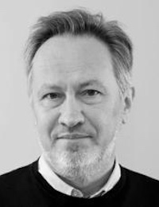

FULL/Journal First papers: 15 + 5 minutes
NIER/TD papers: 10 + 5 minutes
Program: Sunday, Monday
| 09:00 - 10:30 | SCAM Keynote (open to VISSOFT participants) When the rubber hits the road: an exciting journey from an academic analysis framework to a SAST product in industry Eric Bodden | |||
| 10:30 - 11:00 | Coffee Break | |||
| 11:00 - 12:30 | Session 4: Software Management and Evolution Session chair: TBD | |||
| Git-Truck: Hierarchy-Oriented Visualization of Git Repository Evolution Thomas Kilbak, Emil Jäpelt, Kristoffer Højelse, Jonas Røssum, Leonel Merino and Mircea Lungu | FULL | |||
| Domain-Centered Support for Layout, Tasks, and Specification for Control Flow Graph Visualization Sabin Devkota, Matthew LeGendre, Adam Kunen, Pascal Aschwanden and Katherine Isaacs | FULL | |||
| Edge Animation in Software Visualization Marcel Steinbeck and Rainer Koschke | FULL | |||
| Bug-Fix Variants: Visualizing Unique Source Code Changes across GitHub Forks Daigo Imamura, Takashi Ishio, Raula Gaikovina Kula and Kenichi Matsumoto | NIER/TD | |||
| Can Git Repository Visualization Support Educators in Assessing Group Projects? Mircea Lungu, Marco D'Ambros, Michele Lanza, Jesper Findahl and Helge Pfeiffer | NIER/TD | |||
| 12:30 - 14:00 | Lunch Break | |||
| 14:00 - 14:20 | Session 5: Journal-First Presentation Session chair: Michele Lanza | |||
| Software Visualizations to Analyze Memory Consumption: A Literature Review Alison Fernandez Blanco, Alexandre Bergel and Juan Pablo Sandoval Alcocer | JOURNAL FIRST | |||
| 14:30 - 15:30 | Keynote Making Systems Explainable Oscar Nierstrasz | |||
| 15:30 - 16:00 | Coffee Break | |||
| 16:00 - 16:35 | Session 6: Software Quality and Automation Session chair: Juan Pablo Sandoval Alcocer | |||
| Visualizing Code Smells: Tables or Code Cities? A Controlled Experiment Falko Galperin, Rainer Koschke and Marcel Steinbeck | FULL | |||
| Applying Visualization Concepts to Large-Scale Software Systems in Industrial Automation Lisa Sonnleithner, Philipp Bauer, Rick Rabiser and Alois Zoitl | FULL | |||
| 16:35 - 17:30 | Closing & Open Steering Committee Meeting Session chairs: Fabian Beck, Roberto Minelli and Mircea Lungu | |||
Keynote: Making Systems Explainable, Oscar Nierstrasz
Abstract. What makes software systems explainable? As we develop and maintain software, we have questions to ask about the code, but piecing together the answers remains hard. The main interface the classical IDE offers is a text editor for the source code. Code, documentation, and the running system are disconnected. In this keynote presentation, we will show how software systems can be made explainable with the help of three interacting technologies: (i) live notebooks that can be used to create narratives that link documentation, source code, and running applications, (ii) example methods that not only perform tests, but produce live examples that can be used within narratives, to explain use cases, scenarios and features, and (iii) a moldable inspector that can be easily extended with live custom views to answer domain-specific questions about software systems. With the help of running examples we will show how these technologies work together to provide a radically different kind of development experience.
Bio. Oscar Nierstrasz is Professor Emeritus of Computer Science at the Institute of Computer Science (INF) in the Faculty of Science of the University of Bern, where he founded the Software Composition Group in 1994. He retired from the University of Bern at the end of 2021, and is currently working at feenk.com. He is co-author of over 300 publications and co-author of the open-source books Object-Oriented Reengineering Patterns and Pharo by Example. Prof. Nierstrasz has been passionate about object-oriented programming since the early 1980s, and has been honoured with the prestigious 2013 Dahl-Nygaard Senior Prize for contributions to the field of Object-Orientation. He has served as Editor-in-Chief of the Journal of Object Technology, as Programme Chair of ECOOP '93, ESEC/FSE '99 and MoDELS '06, and as PC member of countless conferences. He is also known as the author of Identify the Champion, a pattern language for managing the peer review process of conferences.
Program announced!
2022/08/31
The full two day program is listed on the Program page. ...
Accepted Papers Announced
2022/08/04
We have published the list of the accepted papers, see Program page. ...
Keynote Speaker Announced
2022/07/28
The keynote will be delivered by Prof. Oscar Nierstrasz, see Program page. ...
Most Influential Paper Award Co-Chairs Announced
2022/05/04
The MIP paper award at VISSOFT 2022 will be co-chaired by Houari Sahraoui and Mircea Lungu. ...
More News